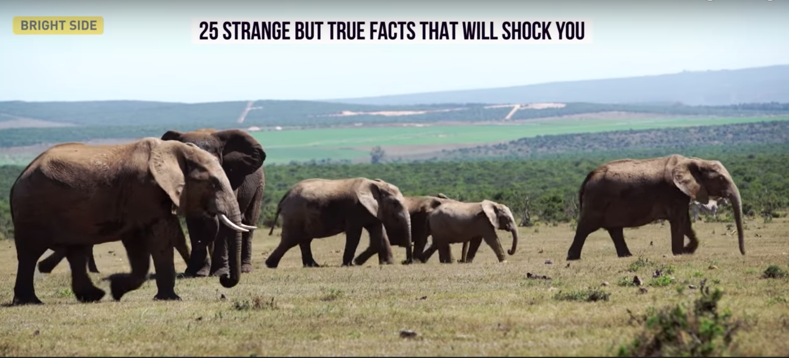

True facts that will SHOCK you!
What? Really? -- You, reading the following post.
If the video couldn't play, here's the text version.
1. Snails Has 14000 Thousand Teeth.
Yes! You seen that right, Snails!
2. The Immortal Food - Honey
Honey never goes off, not after one year, never two, never. Archigologies have often found pots of honey thousands of years that are yet still preserves. This food can last forever.
3. Wonder Of Human Body -
The human nose can remember 15000 difference scents. also human ears can differencitate millions of sounds and our eyes can discriminate thousand of colors!
4. The Immortal -
The Turritopsis Nutricula jellyfish is biologically immortal. They can live forever! The only way they can die is to get consumed by other fish.

5. The Biggest Heart On Earth -
The heart of the blue whale is so massive that a human can swim through it's vein.
Also, blue whale is the largest animal that has ever lived. larger than the biggest dinosour.

6. Small Throat For A BIG Mouth -
Yet the throat of the blue whale is no bigger than a saucer. So it couldn't swallow anything bigger than a beach ball.
7. Ants Against Humanity -
for every person in the world there are about 1.6 million ants. The overall weight of these ants, is the same as the overall weight of human population
8. Animals With Multiple Hearts -
An octupus has three hearts, two of them move blood at the outer part of the octupus, while the thrid one keeps the circulation through body organ. Three hearts, what a lucky guy!

9. The Rain Of Riches -
On saturn and jupiter, rain is made from dimond. It sound like a fantacy but it's true. Unfortunately, this this miracle happens 1.2 billion kilometers away from us.
10. If The Moon Was The Size Of Jupiter -
This is what the sky would look like if Jupiter was the same distance from the earth as the moon, just wow.
11. Bacteria In Body -
There are 10 times more bacteria in the human body than there are cells, fortualtely, bacteria do a lot to keep us healthy.
It means that our body is linked closely more to the microbio world than we used to think.
12. Dianasour Drank Your Water?
How many glasses of water do you drink per day? 3 ? 4? here's a surprising fact. the likelyhood that the glass of the water contains a water molecule that once pass through a dinosour is about 100%.

13. Frankenstein Was NOT The Monster -
Frankenstein was the name of the creator not the monster. In the story victor frankenstein bulit the creature through a labortory through a method consisting chemistry and alchemy.
14. The Common Crystals -
What do you think this is? any idea? this is what sand looks like under a microscope.

15. What Mother Says Is Not Always Right -
Reading is poor lightly or using a computer in dark does not in fact have any negative effect on your vision. The study in british medical journal revealed that reading in poor lighting does not damage your eyes. However, it might cause eyes strain.
16. Oxford Might Be Older Than You Know -
Oxford university is older than the aztec empire. oxfod university was found in 1096 and in the aztec civilzation in 1325. this means that oxfod univeristy is at least 200 years older than the aztec empire.

17. The Untamable Beast -
No one has managed to tame an african elephant, indian elephant has been domesticated for centries. However, african elephants are still wild. Hmm, I wonder why?


18. Wonder Of Human Body 2 -
The wrinkles that appears in your hands after taking a bath for example, play an important role. this phenonmon is caused by the fact that when yourbody encourter an increased amount of moisture it understand the enviornment might be slippery. So the skins on your hands immeiated begins to change in a way that will make it easier for you to grip smooth surfaces.